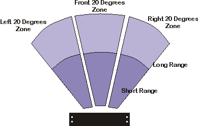
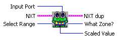
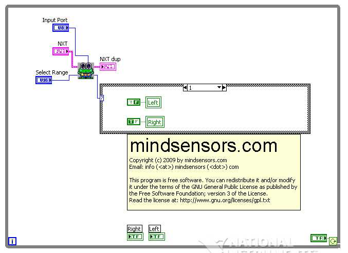

NXTSumoEyes Sensor is able to detect obstacle
in zones and ranges as
shown in
picture below.
The Short range is about 4.5 inches (11.5 cm), and Long Range is about
10 incles (about 25 cm).
This distance changes based on reflectivity of the obstacle, e.g. a
white
paper obstacle is detectable at a farther distance than a dark object.


Inputs
Input Port
-This is where you input the
Input
Port your NXTSumoEyes is
attached to.
Select Range - Specify long or short range.
Outputs
What Zone?
| 0 |
Front |
| 1 |
Right |
| 2 |
Left |
| 3 |
None |
Scaled Value
- Value
returned from the sensor, the values are returned as
follows:
| Obstacle detected on left side |
30-36 |
| Obstacle detected on right side |
63-69 |
| Obstacle detected in front |
74-80 |
Sample Program

Sample located at
..\mindsesnors.com
LVHS\mindsensors.com Sample Programs\NXTSumoEyes-SP\NXTSumoEyes-Direct
Discuss Your Ideas>>